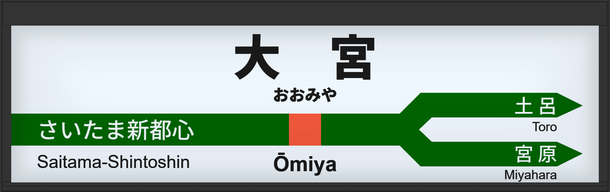

| ←さいたま新都心 | ■ 宇都宮線 | 土呂→ |
|---|---|---|
| ■ 高崎線 | 宮原→ |
1992年4月、日本で初めてATOS放送の実験が開始される。この頃は現在のATOS接近チャイムとは異なる。
1994年4月、通称初期型ATOS放送(簡易)を導入する。全ホームが向山佳衣子氏。
1998年7月に、京浜東北線ATOS化に伴い、全ホームが初期型になる。その時、3・6・8・11番線が津田英治氏、4・7・9番線が向山佳衣子氏に代わる。
2004年9月に常磐初期型に更新、スタンドアローンから、連動放送に変わる。
2004年12月には連動開始から遅れ、詳細に案内されるようになる。
2014年3月は、常磐改良型に更新される。
その後2015年1月には上野東京ライン開業に伴い、宇都宮型に更新され、3・6・8・11番線の声優が津田英治氏から田中一永氏に更新される。
2019年1月に宇都宮改良型に更新された。
宇都宮駅と同じで、時期によっては詳細に案内しておりました。時期5あたりです。
| 3 | ■ 宇都宮線 上野方面 大崎方面 |
3番線接近放送（時期1） 3番線接近放送（時期2） 3番線接近放送（時期3） |
ATOSチャイムが異なります。 簡易放送です。 |
|---|---|---|---|
| 4 | ■ 宇都宮線 上野方面 大崎方面 |
4番線接近放送 |
ATOSチャイムが異なります。 簡易放送です。 |
| 6 | ■ 宇都宮線 上野方面 大崎方面 |
6番線接近放送 |
ATOSチャイムが異なります。 簡易放送です。 |
| 7 | ■ 宇都宮線 ■ 高崎線 上野方面 大崎方面 高崎方面 |
7番線接近放送 |
ATOSチャイムが異なります。 簡易放送です。 |
| 8 | ■ 高崎線 高崎方面 |
8番線接近放送（時期1） 8番線接近放送（寝台特急 鳥海 青森行） |
ATOSチャイムが異なります。 簡易放送です。 |
| 9 | ■ 宇都宮線 宇都宮方面 |
9番線接近放送（時期1） 9番線接近放送（L特急 つばさ9号 秋田行） |
ATOSチャイムが異なります。 簡易放送です。 |
| 11 | ■ 宇都宮線 ■ 高崎線 宇都宮方面 高崎方面 |
11番線接近放送 |
ATOSチャイムが異なります。 簡易放送です。 |